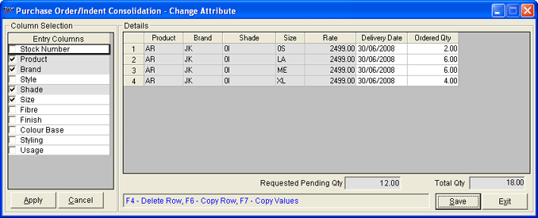

The Purchase Order/Indent Consolidation – Change Attribute window is as shown.

Column Selection: Choose the required column/s based on which purchase order/ indent consolidation needs to be done. The column/s used as basis for indent/ purchase order at POS cannot be de-selected.
Click Apply. The selected items details are displayed in the Details grid.
Cancel: To remove the selections made in the Column Selection.
Delivery Date: Change the delivery dates, if required.
Order Qty: Enter the quantity for each combination of attributes as per the selected entry columns. For example, for each size of the selected Product-Brand-Shade combination.
Note: The order qty can be more than or less than the requested qty.
Requested Pending Qty: The total quantity in the corresponding purchase order is displayed.
Total Quantity: Displays the total of all Order Qty mentioned in the grid, if the ordering level has split one item into multiple lines as per brand, size, colour, etc.
F4: To delete the current row.
F6: To copy the current row as is. This reduces the effort of re-typing all the values. Make necessary changes.
F7: To copy the order quantity specified in the previous row.